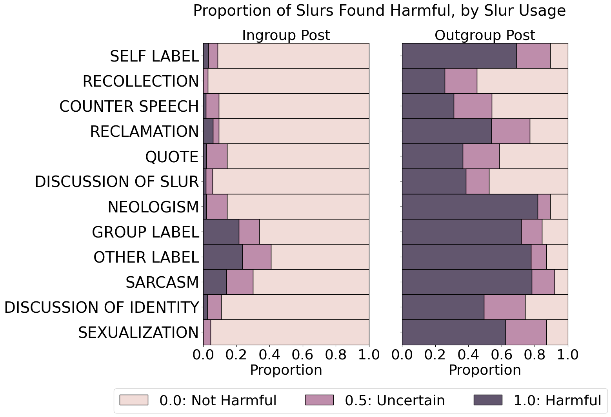
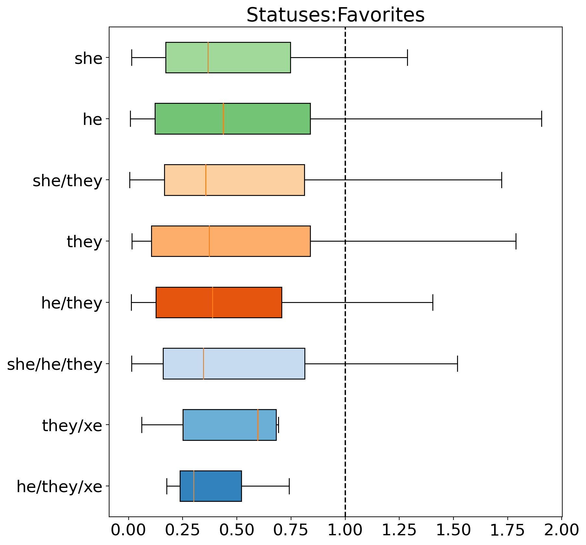

Hello! I’m a fourth year PhD candidate in Computer Science at the University of Southern California’s Information Science Institute. I am co-advised by Professors
Kristina Lerman and
Fred Morstatter.
I study how historic systems of inequity are embedded into AI pipelines. Lately, I have been focusing on biases against Transgender and Non-Binary individuals in Natural Language Processing systems.
Prior to USC, I worked with Families USA to increase health insurance subsidies
in the 2021 American Rescue Plan. I also served as Educational Director at Habonim Dror Camp Moshava.
I earned a BS in Computer Science from the University of California, Santa Cruz, where I helped Professor Lise Getoor create the school’s first Ethics & AI computer science course.
Have a look at my academic CV and Google Scholar profile.
"There is no end goal for AI ethics, there will always be something new to mitigate"
Guest, AI/nsiders Podcast. June 2024.

Harmful Speech Detection by Language Models Exhibits Gender-Queer Dialect Bias
Rebecca Dorn, Lee Kezar, Negar Mokhberian, Fred Morstatter and Kristina Lerman
EAAMO 2024

Non-Binary Gender Expression in Online Interactions
Rebecca Dorn, Negar Mokhberian, Julie Jiang, Jeremy Abramson, Fred Morstatter and Kristina Lerman
ASONAM 2024
COMMUNITY-CROSS-INSTRUCT: Unsupervised Instruction Generation for Aligning Large Language Models to Online Communities
Zihao He, Rebecca Dorn, Siyi Guo, Minh Duc Chu, Kristina Lerman
Arxiv paper here, 2024.
OATH-Frames: Characterizing Online Attitudes Towards Homelessness via LLM Assistants
Jaspreet Ranjit, Brihi Joshi, Rebecca Dorn, Laura Petry, Olga Koumoundouros, Jayne Bottarini, Peichen Liu, Eric Rice and Swabha Swayamdipta
Arxiv paper here, 2024.
Gender and Prestige Bias in Coronavirus News Reporting
Rebecca Dorn, Yiwen Ma, Fred Morstatter, Kristina Lerman
Arxiv paper here, 2021.
OATH-Frames: Characterizing Online Attitudes Towards Homelessness via LLM Assistants
Jaspreet Ranjit, Brihi Joshi, Rebecca Dorn, Laura Petry, Olga Koumoundouros, Jayne Bottarini, Peichen Liu, Eric Rice and Swabha Swayamdipta
Poster at USC showCAIS (Center for AI in Society), May 2024, Best student poster award
Harmful Speech Detection by Language Models Exhibits Gender-Queer Dialect Bias
Rebecca Dorn, Lee Kezar, Negar Mokhberian, Fred Morstatter and Kristina Lerman
Poster at SoCalNLP, 2023
Non-Binary Gender Expression in Online Interactions
Rebecca Dorn, Negar Mokhberian, Julie Jiang, Jeremy Abramson, Fred Morstatter and Kristina Lerman
Poster at SBP-BRiMS, 2023. See poster here.
Gender-Queer Dialect Bias in Harmful Speech Detection by Large Language Models
Rebecca Dorn
Presentation at Fairness & Bias Group, USC Information Science Institute, November 2023
The Model is (Sometimes) Right: Biases in Machine Learning
Rebecca Dorn, Casandra Rusti
Presentation at USC ISI's Stimulating STEM Summer Program, July 2023
Non-Binary Gender Expression in Online Interactions
Rebecca Dorn
Presentation at USC showCAIS (Center for AI in Society), March 2023
Studying Gender Equity with Data Science
Rebecca Dorn
Presentation at USC Women in Science and Engineering (WiSE) STEM Bytes, October 2022